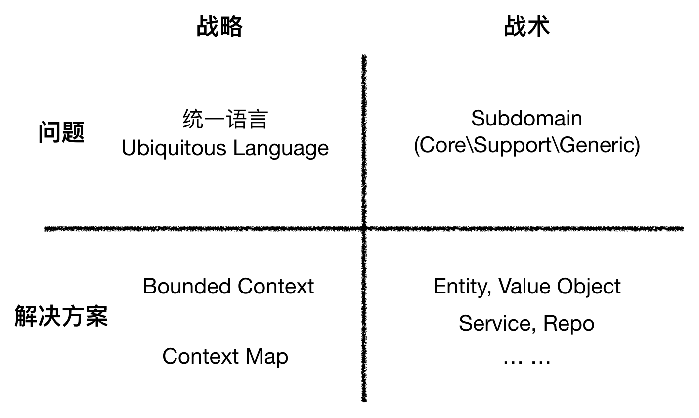

- 001 「战略篇」访谈 DDD 和微服务是什么关系？.md.html
- 002 「战略篇」开篇词：领域驱动设计，重焕青春的设计经典.md.html
- 003 领域驱动设计概览.md.html
- 004 深入分析软件的复杂度.md.html
- 005 控制软件复杂度的原则.md.html
- 006 领域驱动设计对软件复杂度的应对（上）.md.html
- 007 领域驱动设计对软件复杂度的应对（下）.md.html
- 008 软件开发团队的沟通与协作.md.html
- 009 运用领域场景分析提炼领域知识（上）.md.html
- 010 运用领域场景分析提炼领域知识（下）.md.html
- 011 建立统一语言.md.html
- 012 理解限界上下文.md.html
- 013 限界上下文的控制力（上）.md.html
- 014 限界上下文的控制力（下）.md.html
- 015 识别限界上下文（上）.md.html
- 016 识别限界上下文（下）.md.html
- 017 理解上下文映射.md.html
- 018 上下文映射的团队协作模式.md.html
- 019 上下文映射的通信集成模式.md.html
- 020 辨别限界上下文的协作关系（上）.md.html
- 021 辨别限界上下文的协作关系（下）.md.html
- 022 认识分层架构.md.html
- 023 分层架构的演化.md.html
- 024 领域驱动架构的演进.md.html
- 025 案例 层次的职责与协作关系（图文篇）.md.html
- 026 限界上下文与架构.md.html
- 027 限界上下文对架构的影响.md.html
- 028 领域驱动设计的代码模型.md.html
- 029 代码模型的架构决策.md.html
- 030 实践 先启阶段的需求分析.md.html
- 031 实践 先启阶段的领域场景分析（上）.md.html
- 032 实践 先启阶段的领域场景分析（下）.md.html
- 033 实践 识别限界上下文.md.html
- 034 实践 确定限界上下文的协作关系.md.html
- 035 实践 EAS 的整体架构.md.html
- 036 「战术篇」访谈：DDD 能帮开发团队提高设计水平吗？.md.html
- 037 「战术篇」开篇词：领域驱动设计的不确定性.md.html
- 038 什么是模型.md.html
- 039 数据分析模型.md.html
- 040 数据设计模型.md.html
- 041 数据模型与对象模型.md.html
- 042 数据实现模型.md.html
- 043 案例 培训管理系统.md.html
- 044 服务资源模型.md.html
- 045 服务行为模型.md.html
- 046 服务设计模型.md.html
- 047 领域模型驱动设计.md.html
- 048 领域实现模型.md.html
- 049 理解领域模型.md.html
- 050 领域模型与结构范式.md.html
- 051 领域模型与对象范式（上）.md.html
- 052 领域模型与对象范式（中）.md.html
- 053 领域模型与对象范式（下）.md.html
- 054 领域模型与函数范式.md.html
- 055 领域驱动分层架构与对象模型.md.html
- 056 统一语言与领域分析模型.md.html
- 057 精炼领域分析模型.md.html
- 058 彩色 UML 与彩色建模.md.html
- 059 四色建模法.md.html
- 060 案例 订单核心流程的四色建模.md.html
- 061 事件风暴与业务全景探索.md.html
- 062 事件风暴与领域分析建模.md.html
- 063 案例 订单核心流程的事件风暴.md.html
- 064 表达领域设计模型.md.html
- 065 实体.md.html
- 066 值对象.md.html
- 067 对象图与聚合.md.html
- 068 聚合设计原则.md.html
- 069 聚合之间的关系.md.html
- 070 聚合的设计过程.md.html
- 071 案例 培训领域模型的聚合设计.md.html
- 072 领域模型对象的生命周期-工厂.md.html
- 073 领域模型对象的生命周期-资源库.md.html
- 074 领域服务.md.html
- 075 案例 领域设计模型的价值.md.html
- 076 应用服务.md.html
- 077 场景的设计驱动力.md.html
- 078 案例 薪资管理系统的场景驱动设计.md.html
- 079 场景驱动设计与 DCI 模式.md.html
- 080 领域事件.md.html
- 081 发布者—订阅者模式.md.html
- 082 事件溯源模式.md.html
- 083 测试优先的领域实现建模.md.html
- 084 深入理解简单设计.md.html
- 085 案例 薪资管理系统的测试驱动开发（上）.md.html
- 086 案例 薪资管理系统的测试驱动开发（下）.md.html
- 087 对象关系映射（上）.md.html
- 088 对象关系映射（下）.md.html
- 089 领域模型与数据模型.md.html
- 090 领域驱动设计对持久化的影响.md.html
- 091 领域驱动设计体系.md.html
- 092 子领域与限界上下文.md.html
- 093 限界上下文的边界与协作.md.html
- 094 限界上下文之间的分布式通信.md.html
- 095 命令查询职责分离.md.html
- 096 分布式柔性事务.md.html
- 097 设计概念的统一语言.md.html
- 098 模型对象.md.html
- 099 领域驱动设计参考过程模型.md.html
- 100 领域驱动设计的精髓.md.html
- 101 实践 员工上下文的领域建模.md.html
- 102 实践 考勤上下文的领域建模.md.html
- 103 实践 项目上下文的领域建模.md.html
- 104 实践 培训上下文的业务需求.md.html
- 105 实践 培训上下文的领域分析建模.md.html
- 106 实践 培训上下文的领域设计建模.md.html
- 107 实践 培训上下文的领域实现建模.md.html
- 108 实践 EAS 系统的代码模型.md.html
- 109 后记：如何学习领域驱动设计.md.html
- 捐赠
092 子领域与限界上下文
领域驱动的战略设计直接影响到战术设计的具体执行，正如上一章介绍的知识体系，各个抽象层次的不同关注点实际上是互相影响的，只是相对而言，战略设计对战术设计的影响更为显著。即使都处于宏观层次，全局分析阶段的决策对战略设计阶段的影响也非常明显。因此，在考虑战略设计与战术设计的融合时，有必要梳理会对战术设计产生深远影响的战略设计问题，我称之为是领域驱动设计的战略考量。
子领域与限界上下文
各家观点
一个领域可以被划分为多个子领域（Subdomain），而在领域驱动设计的诸多概念中，子领域与限界上下文之间的关系一直纠缠不清。《实现领域驱动设计》的作者 Vaughn Vernon 试图为这二者寻找到一种映射关系，他甚至认为良好的领域驱动设计应该遵循“一个子领域对应一个限界上下文”的标准。他在书中写道：
通常，我们希望将子领域一对一地对应到限界上下文。这种做法显式地将领域模型分离到不同的业务板块中，并将问题空间和解决方案空间融合在一起。在实践中，这种做法并不总是可能的，但通过新的努力，我们是可以做到这一点的。
这里提到的概念包括：领域、子领域（Subdomain）和限界上下文。倘若为子领域和限界上下文建立了一种映射关系，我们可以得出如下关系：
如上的映射关系是否合理呢？我就这一问题请教了 ThoughtWorks 的李新，他说：“简单粗暴的一对多或者一对一都是因为懒于思考。”这是因为子领域属于问题空间中的战略精炼，限界上下文属于解决方案空间战略阶段的模式。二者并无直接的映射关系。如果真的需要确定二者的关系呢？李新谈到：
在实际情况下，一对多或者多对一都是合理的。即一种映射是一个限界上下文包含多个子领域，另一种映射是一个子领域拆分成多个限界上下文，或者就是简单的一对一关系。不过要小心的是，对于第一种映射，注意我用了包含两个字，意味着在这个限界上下文中的任何一个子领域都不能再包含在其他限界上下文中。而对第二种映射，注意我用了拆分两个字，意味着，这个子领域中的任何一个限界上下文都不能包含其他子领域。只要上面的原则不违背，两种映射都没有问题。
ThoughtWorks 的肖然对此问题有着自己的理解，他在文章《当子领域遇见限界上下文》中首先高屋建瓴地从战略、战术、问题、解决方案四个象限对领域驱动设计的主要概念做了一个概况性的归类：

肖然在这篇文章比较了 Vaughn Vernon、事件风暴的发明者 Alberto Brandolini 和他自己的观点：
- Vaughn Vernon：一直以来的实践方式隐含着一对一的对应关系
- Alberto Brandolini：隐含地认为是多对多的关系，又或者可以说二者没有直接的对应关系
- 肖然：认为一对多的映射是最优的选择
ENode 框架的作者汤雪华用一幅图表达了问题空间和解决方案空间诸概念之间的关系：
汤雪华认为在问题空间关注的是领域，并将其划分为多个子领域（或者说子域）。每个子领域由业务模型构成，它们是分析阶段的产物。通过抽象和精炼，每个子领域中的业务模型又映射为解决方案中子解决方案（即限界上下文）的领域模型。得到的领域模型和技术架构则属于设计阶段的产物。
显然，针对子领域和限界上下文之间的关系，真可以说是众说纷纭，互相矛盾。真理不仅没有越辩越明，反而让人变得更糊涂了。我认为，要把这两个概念之间的关系分辨清楚，需要来一个追本溯源。
追本溯源
每当我分辨不清领域驱动设计的概念定义时，往往会求助于 Eric Evans 的著作《领域驱动设计》，它才是领域驱动设计这门武功的正宗心法。那么，Eric Evans 为何要引入子领域和限界上下文这两个概念呢？我翻阅了《领域驱动设计》整本书以及 Eric Evans 在 2015 年发布的 Domain-Driven Design Reference 文档，都不见有子领域（Subdomain）这个概念，与之相似的概念是通用子领域（Generic Subdomains），它和核心领域（Core Domain）都是一种精炼模式。
真正提出子领域概念的或许是 Vaughn Vernon，他在《实现领域驱动设计》一书中将“核心领域”视为一种子领域，此外还包括支撑子领域（Supporting Subdomain）和通用子领域（Generic Subdomains）。Vernon 区分了支撑子领域和通用子领域的价值：
创建支撑子领域的原因在于他们专注于业务的某个方面，否则，如果一个子领域被用于整个业务系统，那么这个子领域便是通用子领域。我们并不能说支撑子领域和通用子领域是不重要的，他们是重要的，只是我们对他们的要求并不像核心领域那么高。
由此可以看出，虽然 Eric Evans 并没有明确提出“子领域”的概念，但实则核心领域与通用子领域就是对领域的一种划分，只是 Vaughn Vernon 在此基础上将其明确化了，并进一步细分了子领域的类别。为了保证概念的一致性，我统一将子领域称之为核心子领域（Core Subdomain，Eric Evans 称为核心领域）、支撑子领域（Supporting Subdomain）和通用子领域（Generic Subdomain），它们彼此的关系如下图所示：
在确定了“子领域”这个概念后，我们再来分析 Eric Evans 提出它的根本原因。他在《精炼》一章中写道：
如何才能专注于核心问题而不被大量的次要问题淹没呢？分层架构可以把领域概念从技术逻辑中（技术逻辑确保了计算机系统能够运转）分离出来，但在大型系统中，即使领域被分离出来，它的复杂性也可能仍然难以管理。
为了使领域模型成为有价值的资产，必须整齐地梳理出模型的真正核心，并完全根据这个核心来创建应用程序的功能。……对模型进行提炼。找到核心领域并提供一种易于区分的方法把它与那些起辅助作用的模型和代码分开。最有价值和最专业的概念要轮廓分明。尽量压缩核心领域。让最有才能的人来开发核心领域，并据此要求进行相应的招聘。……仔细判断任何其他部分的投入，看它是否能够支持这个提炼出来的核心（Core）。
毫无疑问，核心子领域专注于系统的核心问题，支撑子领域与通用子领域专注于系统的次要问题。核心子领域包含了领域模型最为精华的部分，这意味着领域模型在不同子领域的价值是不相同的。如果不区分价值的重要性就对整个领域模型进行统一方式的精炼，会让建模变得得不偿失。
核心子领域与支撑子领域、通用子领域包含的领域模型都是整个系统领域模型的组成部分。核心子领域包含的领域概念是专有的，如保险系统的理赔子领域不会出现在其他行业的业务系统中；支撑子领域包含的领域模型虽是专有的，但它却是相对次要的，如物流系统中地图导航子领域之于运输子领域；通用子领域包含的领域概念是通用的，甚至是跨行业的，例如金融业、制造业或运输业都需要组织结构图。既然不同子领域的重要性不同，就需要将核心子领域从领域中精炼出来，又或者说需要将通用子领域与支撑子领域从领域中剔除出去。前者称之为“突出核心（Highlighted Core）”，用文档或其他形式把模型中的核心领域标记出来；后者称之为“分离核心（Segregated Core）”，把所有通用元素或支持性元素提取到其他地方。
无论是核心子领域还是通用子领域或支撑子领域，它们内部只能包含领域模型；而在限界上下文中，包含的不仅有领域模型，还包括数据模型、服务模型以及其他基础设施实现代码，Eric Evans 将它们统一称之为“模型”。Eric Evans 在用词上非常讲究，在《保持模型的完整性》一章中，他定义的限界上下文使用了“模型”这个术语：
明确地定义模型所应用的上下文。根据团队的组织、软件系统的各个部分的用法以及物理表现（代码和数据库模式等）来设置模型的边界。在这些边界中严格保持模型的一致性，而不是受到边界之外问题的干扰和混淆。
显然，模型不同于领域模型，这一区别凸显了限界上下文与子领域之间的差异。由于我将领域分析模型、领域设计模型和领域实现模型视为领域模型在领域建模不同阶段的表现形式，因此领域模型应属于解决方案空间。为了区别问题空间与解决方案空间，汤雪华使用“业务模型”一词来表达领域在问题空间的模型。虽然这一定义有助于分辨问题空间和解决方案空间，但是说一个领域或子领域包含了业务模型而非领域模型，总显得有些自相矛盾。我认为，对子领域的划分还停留在问题空间的需求分析阶段（注意，是需求分析，而非领域分析建模，后者属于解决方案空间的范畴），不妨将子领域包含的领域模型视为“领域需求模型”，该模型是对现实世界的问题定义，或许更加恰当。
概念越多，理解起来就越复杂，只要明确了子领域和限界上下文分属问题空间与解决方案空间这一本质差异，笼统皆称为“领域模型”也未尝不可。如果再引入一个业务模型，我们又要执著于区分业务和领域到底有何差异了。何苦呢？
经过对子领域与限界上下文概念的追本溯源，可以获得如下确定无疑的结论：
- 子领域的价值不在于如何划分领域模型，而在于辨别领域模型的重要价值和优先级，从而区分出领域模型到底属于核心子领域，还是通用子领域或支撑子领域。例如，子领域模型并不强调 Order 领域模型与 Product 领域模型到底属于哪个子领域，而在于判断这两个领域模型是否属于核心子领域？限界上下文则不同，我们需要确定系统到底有哪些限界上下文，并通过上下文的边界来保持模型的完整性与独立性。可以说，子领域是一个宽泛笼统的对领域的主次划分，限界上下文则是精准明确的对领域的特性划分；前者看重价值大小，后者看重控制边界。
- 子领域包含的是领域模型，与技术实现彻底无关，因而属于问题空间的范畴；限界上下文包含的是模型，意味着与技术相关的模型也在限界上下文边界内，因而属于解决方案空间的范畴。限界上下文中的领域模型通过上下文边界进行划分，在上下文内部，该领域模型应遵循统一语言，保持领域概念的统一。
- 划分子领域的目的在于确定建模的成本，并由此进行合理的工作分配。属于核心子领域的领域逻辑值得用最好的团队实施领域驱动设计，以保障领域模型的质量；属于通用子领域或支撑子领域的领域逻辑可以交给非核心开发人员用最简便快速的方法完成，甚至可以考虑购买或者外包。划分限界上下文的目的在于降低系统复杂度，以分而治之的思想形成内外两个边界，起到封装和隔离的作用。限界上下文的划分虽然也有利于工作的分配，但它是根据领域逻辑的特性而非团队成员的能力来分配工作的。
由于子领域和限界上下文包含的内容和范围皆不同，它们之间不能简单地建立任何映射或包含关系。然而，由于子领域的划分直接影响到领域模型的重要价值和优先级，一旦从问题空间迈向解决方案空间，由于领域模型的分析、设计与实现都在限界上下文的边界内完成，核心子领域的识别与确定会直接影响到战术设计过程的选择。
化繁为简
在明确了子领域和限界上下文之间的差异与关系后，就需要直落本心，干净利落地做减法，要诀就是在宏观层次不去考虑子领域与限界上下文的关系，让它们形同陌路，互不干扰。
在宏观层次的全局分析阶段，不考虑限界上下文，只需确定系统的愿景和目标，通过识别客户的痛点与价值，又或者利用业务架构的价值链等方法，就可以确认整个系统的子领域。如前所述，关键不在于确定子领域的边界，而在于确定哪些是核心子领域，哪些是通用或支撑子领域。输出的业务全局分析文档中，建议包含 Eric Evans 提出的“精炼文档”，用以描述和解释核心子领域。
在宏观层次的战略设计阶段，不考虑子领域，而是通过用例、事件风暴等方法（当然也可以凭经验）对领域进行分析，然后获得整个系统的限界上下文，并通过上下文映射确定限界上下文之间的关系。识别限界上下文时，首先要从领域逻辑层面确定业务边界，然后再从团队合作层面与技术实现层面进一步提高边界划分的准确度。这个过程也体现了解决方案空间的特征，即不仅要考虑领域模型的划分，还要考虑计算机如何运行该系统。
一旦进入微观层次的战术设计阶段，子领域的影响才会凸显出来。因为我们决定为限界上下文分配特性团队，还需要针对限界上下文开展模型驱动设计，是否选择由核心团队成员组成的特性团队，是否选择领域模型驱动设计，就要看该限界上下文的主要领域模型是否属于核心子领域的范畴。
什么是主要领域模型？一个限界上下文中的领域模型应该满足“高内聚低耦合”的设计原则，与限界上下文表达的内聚概念保持一致的领域概念就是主要领域模型。销售上下文的内聚概念为销售，诸如销售渠道、销售区域、销售人员等领域概念都是围绕“销售”这个内聚概念定义的，这些就属于主要领域模型；然而，销售上下文还需要知道客户和商品的信息，这两个领域概念分别体现了客户和产品这两个内聚概念，因此不属于销售上下文的主要领域模型。如果销售上下文的主要领域模型属于核心子领域，就值得我们用最好的团队成员为销售上下文开展领域模型驱动设计；如果主要领域模型只属于支撑子领域或者通用子领域，就应该首先考虑用简单的模型驱动设计方法，又或者考虑外包与购买的快捷策略。
这一化繁为简的方式让我们不必纠结于子领域和限界上下文之间的关系。宏观层次的全局分析阶段与战略设计阶段本身就分属问题空间和解决方案空间，故而子领域与限界上下文互不干涉。到了微观层次，需要以限界上下文为边界进行分析和设计建模，建模团队、建模成本与建模方法的选择就取决于子领域的类别。至于纳米层次的实现建模，就要看微观层次的设计决策了。
© 2019 - 2023 Liangliang Lee. Powered by gin and hexo-theme-book.